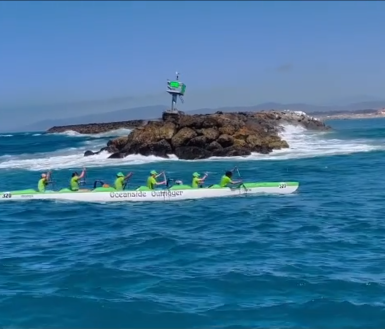

About Me

I'm Jett, an aspiring computer engineer and a senior at [redacted] High School! Subjects I am passionate about include software & electrical engineering, CAD, robotics, and occasionally photography. Some aspects I am particularly interested in are kernel, OS, and programming language development, as well as embedded firmware.
I am the current President and Software Lead of my school's robotics team. I also am a member of my local Outrigger Canoe team.
Robotics

When I joined my school's robotics club over the summer of 2022, I had no idea what I was getting myself into. It was over that summer that I learned about FIRST Robotics; The competition that our club competes in, FRC, is essentially a sports match between robots built by teams of high-schoolers from all around the world. There are thousands of teams from hundreds of countries around the world, and typically a team will participate in one or two "regionals", where about 50 teams will gather to compete. Each match is played between 2 alliances of 3 teams each. We are team 8891 Wild Raccoons, a relatively small team based out of [redacted] High School. Over the last 2½ years I have devoted thousands of hours to not just building the best robots we can build, but also to building the best community I could within the club.

After becoming Vice President after just a single year with the club, I used the knowledge I had gained from out 2023 season to build the club's communication, organization, and design processes to new hights. These efforts clearly paid off, with the 2024 season marking the first regional win and World Championships qualification in our team's history. As the robot driver for all four events in our 2024 season, and both in our 2023 season, I gained a unique perspective for just how much our team had grown. There was a massive increase in reliability, quality, and professionalism that, while present during 2023, had truly breached new ground in our team's path to greatness. I could not have done anything I have in the club without the rigourous insign given to me by the previous members of the team, of course, and as President I hope to become as much as an inspiration to our newest recruits as they were to me.
Outrigger
After joining Oceanside Outrigger Canoe Club in 2020, I developed a deep appreciation for the value and commitment to teamwork. Outrigger Canoeing is a form of canoeing that was developed in the islands of Southeast Asia, and turned into not just a necesity, but a sport for the people of Hawaii around 200 A.D.. It is a sport in which you must be willing to take criticism. The most popular form is O.C. 6, in which 6 people paddle the same canoe, including a steersman in the back. Since there are so many people in a single crew, you must all work together as a team to make sure the boat moves smoothly. Small variations in a single person's technique can negatively or positively affect everyone else in a crew. Because of this, you must learn that criticism is never personal, rather it is just an attempt to help you mesh with the rest of the crew. Outrigger has taught me a large amount of teamwork and leadership lessons that I still carry to this day, but honestly? It's just really fun!